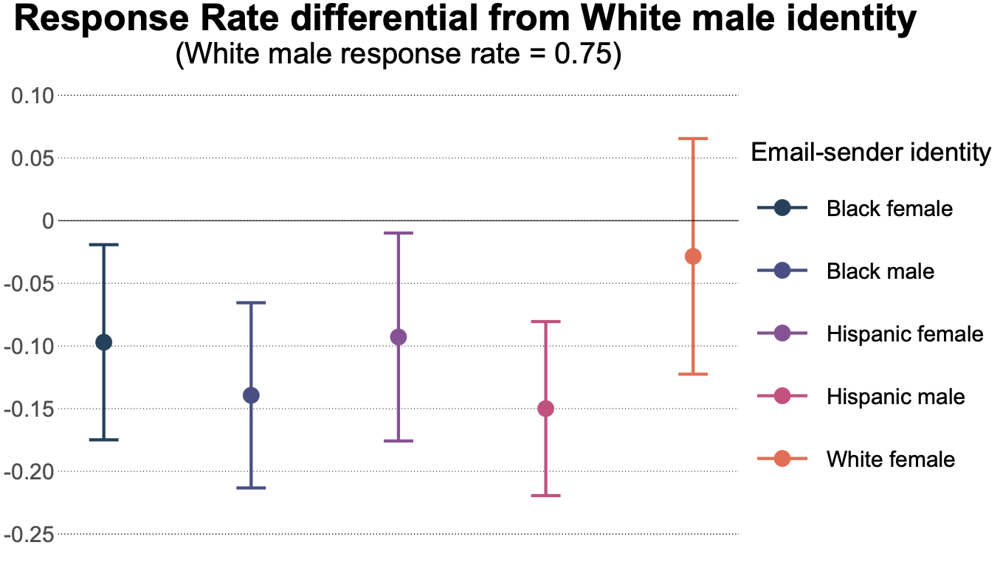
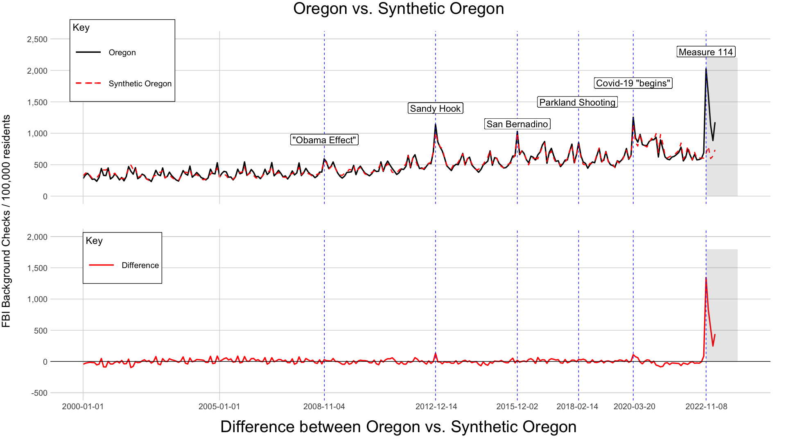

My research focuses on environmental economics and the economics of
criminal justice. More broadly, I research the provision of public goods
for a diverse public, and the consequences that can arise. Much of my
work uses an equity framework to explore the distributional impact of
public goods and policies.
I believe that descriptive work is valuable. I believe we are having
a replication crisis. And I believe the best research comes from
inter-disciplinary collaboration.


Public preferences for a
state-level carbon cap-and-trade program
with Trudy Ann
Cameron
Gun control and the steel
paradox
with Katie Bollman, Benjamin Hansen and Edward
Rubin
Asset Forfeitures and Traffic Fines: Substitutes or
Complements?
Financial incentives can influence policing. Both through “taxation by citation” and through asset forfeiture, police departments generate revenue through policing practices. While both of these revenue sources are common in many police departments, little is known about how they affect policing behaviors—or how they interact. Using several rich datasets on policing and municipal budgets, I measure the elasticity of substitution between traffic citations and asset forfeiture at the department level. The findings have important implications for policy makers, social activists, and researchers.
Distributional Effects of Gun Control Laws
with Tami Ren
In November, Oregon narrowly passed a measure that restricts the possession of firearms, reflecting a national push for stricter gun control. The new law charges the Oregon State Police (OSP) with issuing permits to lawfully own a firearm, and allows the OSP discretion when deciding to issue a permit. While proponents of the law have lauded the discretionary power, opponents are concerned that designating an institution that potentially struggles with biased practices as an important gatekeeper could have unintended impacts. We use a field experiment to test for the presence of racial discrimination concerning firearm ownership.
Using Machine Learning to Explore Racist Stereotypes
with Edward Rubin
Recent advances in machine learning have created opportunities for new and compelling research. We use the AI programs GPT-3 and Dall_e to explore the prevalence of racial stereotypes in machine learning programs. We then explore the implications of these results for researchers and policymakers.